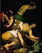
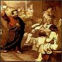

- He notado que, pese a las religiones, esa convicción [la de saberse inmortal]
es rarísima [1].
Israelitas, cristianos y musulmanes profesan la inmortalidad, pero la veneración que tributan al primer siglo
prueba que sólo creen en él, ya que destinan todos los demás, en número infinito, a premiarlo o castigarlo.
Al parecer, imagina que los cristianos [2] imaginan (o peor: imagina que los cristianos coherentes deberían imaginar; o peor todavía: quiere enseñar que los cristianos coherentes deberían imaginar) a la vida "después de la muerte" en continuidad cronólogica con la vida terrena. Como si dijéramos : un tipo muere a los 80 años; un año después, cumplirá su cumpleaños 81 (en el cielo o en el infierno). Y a los 1000 años, el tipo podría decir: "yo he vivido los primeros 80 años de mi vida en la tierra, y los 920 restantes acá donde usté me ve..."
Pobre (gran) Borges... entre los que lo admiran por ciertas poesías (malísimas) que (afortunadamente) no son suyas, y los que lo admiran por estas sofistiquerías bobas que (desafortunadamente) son típicamente suyas... Típicas en lo que respecta a su intelecto (no muy fuerte), y su formación filosófica (pobre); atípicas en cambio, en lo que respecta al papel de sofista seductor; Borges tuvo la gran y rara virtud (con caídas, como se ve) de hacer la suya, de no buscar el aplauso de los imbéciles.
En fin.. "he cometido el peor de los pecados que un hombre puede cometer":
he despreciado la filosofía de Borges... qué va cer ... si de esos "pecados"
contra el sentir de las mayorías se trata, no es el primero, ni seré el último .
Y a pesar de todo (y que no se me olvida lo de Gracián, que también tengo para sacarle el cuero) ... aguante Borges.
[1] sin embargo, en "funes el memorioso"
dice algo que si no es lo contrario, le pasa cerca: "Lo cierto es que vivimos postergando todo lo postergable; tal vez
todos sabemos profundamente que somos inmortales y que tarde o temprano, todo hombre hará todas las cosas y sabrá todo.
[2] No solamente cristianos, por supuesto; pero tampoco veo por qué
"cristianos, judíos y musulmanes"; los judíos (al menos antes de Cristo) no tenían muy formado
el concepto de vida de ultratumba y premio/castigo; mucho menos, en todo caso, que los egipcios
y tantísimas religiones de todo el mundo
Necesitaba fósforos (hace días que venía encendiendo la hornalla con fósforos usados que encendía en el piloto del calefón), y agarré una caja al pasar por la góndola del supermercado. Demasiado tarde me percato de que son fósforos especiales "super largos", para encender hornos y cosas así...
- "Siempre el mismo estúpido, ni siquiera una caja de fósforos sabés comprar...", me imagino que me increpa mi imaginaria mujer (de imaginado pésimo carácter...).
A modo de defensa, se me ocurre esto:
Es cierto que la caja ostentaba, bien visible, la leyenda "fósforos super largos".
Y alguna región de mi mente (ahí entre la conciencia y la inconciencia) tomó nota de
eso. Pero la misma región de mi mente seguramente descartó ese dato: y la culpa
no es mía, sino de los publicistas.
Uno está saturado de esos avisos con adjetivos superlativos y enfáticos; y cuando uno
lee cosas como "Dentífrico Don Ernesto: mucho más que un dentífrico",
no presta demasiado atención, y sabe que (en el mejor de los casos) se trata de
un dentífrico. La publicidad nos obliga a desarrollar estas economías de atención,
para eliminar adjetivos calificativos bombásticos. De otro modo, la vida del consumidor
moderno sería un durísimo camino empedrado de atroces desilusiones....
Así, es disculpable, creo que yo haya tomado eso de "super largos" como
mero énfasis publicitario, y haya malgastado plata en unos fósforos que,
en efecto, son súper largos... ridículamente largos, en realidad...
¿Resulta convincente esto? Quizás. En todo caso, no tengo que preocuparme tanto por dar tantas explicaciones tan bizantinas, qué tanto; ser soltero también tiene sus ventajas...
|  |
Hoy es la fiesta de
San Pedro y San Pablo. Según una vieja tradición, murieron mártires en Roma, el mismo día, 29 de junio del año 64. También cuentan que Pedro, condenado a la crucifixión, se consideró indigno de morir como Jesús, y lo crucificaron cabeza abajo. Lindos tipos, y lindos tiempos... |
 |
A uno le cuesta renunciar a sus berretines... Yo, todavía no me resigno (entre muchísimas cosas) al hecho de no tener una buena cultura literaria; como si aún estuviera a tiempo...
Será un poco por eso; será un poco porque era uno de los libros en
mi biblioteca sin leer, será porque era uno de los pocos que cabe en el bolsillo
de mi campera... El caso es que en estos días me puse a leer -por primera
vez- al finado Cicerón.
Creí que me iba a resultar algo aburrido; y encima el título "Diálogos
del Orador" no me era prometedor (uno no tiene mucho que ver
con la retórica...).
Pero no. Por ahora, me fue mucho más interesante y legible de lo esperado:
- ...muchos no hace más que ejercitar la voz, aunque sin arte, y mover la lengua
y deleitarse con la muchedumbre de las palabras. Les pierde el haber
oído decir que "hablando se aprende a hablar", cuando la verdad es que
hablando mal,es muy fácil conseguir el hablar peor.
Repito: hoy tocan (y gratis) Salgán y De Lío, a las 21:00, cerca de Congreso. Algo digno de escuchar.
Un muy wodehousiano pasaje de Wodehouse (y perdón, pero me dio no sé qué traducirlo ... y no es pereza... o no solamente...):
-
...
The butler had given up the unequal struggle. He knew when he was licked.
- Mrs Stubbs- he announced aloofly, and went off, washing his hands of the whole unpleasant affair and leaving his employer to deal with the situation as he thought best.
Sir Gregory stood staring, the smoked salmon frozen on its fork. It is always disconcerting when an unexpected guest arrives at dinner time, and particularly so when such a guest is a spectre from the dead past. The historic instance, of course, of this sort of thing is the occassion when the ghost of Banquo dropped in to take pot luck with Macbeth. It gave Macbeth a start, and it was plain from Sir Gregory's demeanour that he also had had one.
- What ? What ? What ? What ?- he gasped, for he was a confirmed what-whatter in times of emotion.
Maudie's blue eyes were burning with a dangerous light.
- So there you are!- she said, having given her teeth a little click.- I wonder you can look me in the face, Tubby Parsloe.
Sir Gregory blinked.
- Me?
_ Yes, you.
It ocurred to Sir Gregory that another go at the smoked
salmon might do something to fortify a brain which was
feeling as if a charge of trinitrotoluol had been
touched off under it. Fish, he had heard or read somewhere,
was good for the brain. He took a fork-full, hoping for the
best, buy nothing happened. His mind still whirled.
Probably smoked salmon was not the right sort of fish.
...
Pigs have wings
Uno de los "Apuntes del fútbol en Flores":
-
En un lugar preciso de la cancha de Piraña acecha el demonio.
A veces los jugadores pisan el sector infernal, adquieren habilidades secretas,
convierten muchos goles, triunfan en Italia, se entregan al lujo y se destruyen.
Otras veces los jugadores pisan al revés y se entorpecen, juegan mal, son excluidos del equipo, abandonan el deporte, se entregan al vicio y se destruyen.
Hay quienes no pisan jamas el coto del diablo y prosiguen oscuramente sus vidas, padecen desengaños, pierden la fe y se destruyen.
Conviene no jugar en la cancha de Piraña.
Fotos (recién reveladas; aunque nada nuevas...)
- el libro "Venas Abiertas de América Latina", de Eduardo Galeano, tal vez el mejor libro de historia de todos los tiempos dice un weblog
- "en otro: En 2 de julio se cumplirán seis meses de la asunción de Duhalde. ¿Qué cosas positivas se lograron? Las negativas parecen obvias... La lucidez que teníamos en enero se fue diluyendo, esfumando en esos embates de ensayo y error propios de un primate bonaerense, aliado con Alfonsín y cía. Retrocedimos cien casilleros. ¿No aprendimos nada como consecuencia del sufrimiento, de las continuas violaciones a la Constitución, de la caída total de la economía, de los muertos del cacerolazo del 20 de diciembre? Este ser nefasto que, el mundo lo sabe, llegó al poder a través de un golpe, sigue ahí, enfermo, empecinado, hundiéndonos más cada día, sumando muertos. Corrupto, inútil y ahora también represor.
Eso es Argentina. Así nos enseñaron a pensar, a nuestra generación. Esta es la doctrina y la fe con que nos amamantaron.
Hace unos minutos me vine caminando por Av. de Mayo, a contramano de la marcha.
Carteles del Che. Toda la izquierda,
ahora matizada con "asambleas vecinales". Cartelón de la UBA: Facultad de
Filosofía y Letras. Los intelectuales que aprendieron y nos enseñan
(de mi facultad -Ingeniería-, nada; pero vi sí al chino, legandario militante
que cursó el CBC conmigo -año 1985- y todavía sigue pegando afiches
maoístas en la facultad y -según creo- estudiando).
Lo de siempre; esa religión que respiramos (tiempo pasado y presente).
Los ritos de siempre, para el Dios bueno: el "pueblo", y para el Dios
malo: la policía (y los militares, y el FMI, y -hoy- Duhalde).
Sí... más demonios que dioses buenos, pero ya se sabe que estas cosas son así. Todos saben, o creen saber, a quiénes odian. Pero nadie sabe muy bien qué quieren (y menos a quién quieren).
Sólo queremos "al pueblo". Y el pueblo somos nosotros, claro está.
Ergo: la cosa es fácil: Nosotros somos los buenos. Ellos son los malos.
Resulta relajante saber esto, saber que lo único que nos debe preocupar
es vencer, y que en cambio no tenemos que preocuparnos por
ser buenos, o por discernir dónde está el bien... Qué suerte...
-
¡ El pueblo , unido, jamás será vencido!
En Av. de Mayo y Uruguay, viniendo de Plaza de Congreso, un grupo de chicas, probablemente estudiantes de psicología... ven a cuatro policías en una bocacalle y empieza a insultarlos, a los gritos y a los saltos : "¡Asesinos, asesinos,asesinos !"
Y esas chicas frívolas, apostaría (yo también tuve esa edad y esas "ideas", yo también fui a marchas..) jamás tuvieron el más mínimo contacto con la miseria y con el dolor; jamás se asomaron a sus propias almas; ni siquiera tienen el discernimiento para ver sus propias manchas y que su propio odio es tan sucio como el del peor nazi; y cuando la vida les presente la más mínima "invitación" al sacrificio de sus propios placeres tontos, de sus propias vanidades (intelectuales, sensuales, ideológicas)... serán más cerdas que las burguesas más cerdas.
Después, cuando el mismo veneno que han desparramado vuelva irrespirable el aire, ellas o sus hijas "trabajarán" para rajarse al primer mundo (no a Cuba, ni a Bolivia, ni a la India) y desde allá putearán hasta el fin de sus vidas contra este "país de mierda".
-
Hace unos días, mientras estaba escribiendo con una ligera
irritación algunas de las páginas más falsas de mis memorias, oí llamar
leventemente a mi puerta, pero no me levanté ni contesté. Los golpes
eran demasiado débiles y no me gusta tener tratos con los tímidos....
El visitante, un joven desconocido, a venido a leer a Papini una novela de su autoría. Es
la obra de su vida, dice; y, conocedor de la fama y la sinceridad de P., viene a pedirle
que escuche su lectura y le diga su opinión sincera: si le parece una obra realmente
buena, se comprometerá a hacerlo famoso; si no, el hombre se suicidará (su vida
no tiene otro sentido que haber escrito ese libro). Papini accede.
El hombre lee durante varias horas seguidas. Papini se siente cada vez más espantado.
El personaje de la novela, descubre, no es otro qué él mismo; el libro cuenta con todo detalle,
toda su vida, con sus acciones más viles, sus pensamientos más innobles, sus sueños
más ridículos; cosas conocidas sólo por P. ... y que él mismo había empezado ya a olvidar.
La lectura termina. Interrogado, el hombre parece sencillo y sincero; no conoce a P. más que de nombre,
el personaje es totalmente inventado, afirma...
Finalmente, Papini da su sincera opinión: la historia es "estúpida, aburrida, abominable"; y el personaje es un tipo odioso y desagradable....
El hombre no esperaba esto. Golpeado, se repone, pide disculpas con mucha
dulzura ("perdóneme si mi lectura lo ha cansado... creo que nunca más volveré a molestar a un
ser vivo... olvídeme"). Y se suicida.
P. se acuesta a dormir.
-
Esta mañana me he despertado bastante tarde, con una extraña sensación.
Me parece que ya estoy muerto y que estoy esperando mi entierro. Siento que todo lo que me rodea tiene un aire indecible de cosa pasada, acabada, sin ningún interés para mí.
Un amigo me ha traído unas flores, y le he dicho que podía esperar a ponerlas sobre mi tumba. Creo que sonrió; pero los hombres siempre sonríen cuando no comprenden
El Pater Noster según Simone Weil
(continuación)
"Que venga tu reino"
El reino de Dios es el Espíritu Santo colmando íntegramente el alma de las criaturas inteligentes.
El Espíritu sopla donde
quiere. Sólo se puede llamarlo.
Ni siquiera hay que
pensar en una manera particular de llamarlo para sí,
para tal o cual otro, o aun para todos, sino llamarlo
pura y simplemente; que pensar en él sea un llamado y un grito.
Así como cuando se está al límite de la sed, enfermo de sed, uno ya no se representa el acto de beber en relación a uno mismo, ni siquiera el acto de beber en general. Sólo se representa el agua, el agua tomada en sí misma, pero esta imagen del agua es como un grito de todo el ser.
Notitas:
- Contraposición de este segundo pedido con el primero: éste se refiere al deseo de lo ausente, de lo no realizado; aquél al deseo de lo presente, de lo realizado.
- Además, éste se relaciona con el Espíritu Santo, aquél con el Hijo: Si el "nombre" de Dios (el Hijo) es lo supremamente "santo", el Espíritu es "el que santifica". Y acá pedimos nuestra santificación.
- Estas simetrías y sistematizaciones son para desconfiar; pero,
tomando todo con un granito de sal, (y adelantándonos al resto)
vamos a esquematizar un poco : la cosa, en la visión de Simone,
sería más o menos así:
Padre nuestro... Actitud Tiempo Destino 1 Santificado sea... Aceptación Presente Hacia
DiosHijo 2 venga tu reino Deseo Futuro Espíritu 3 hágase tu voluntad... Aceptación Pasado Padre 4 danos nuestro pan... Deseo Presente Hacia nosotros 5 perdona nuestras deudas... Aceptación Pasado 6 no nos dejes caer... Deseo Futuro - Como siempre, no estoy seguro de esta interpretación de Simone; y no sé cuán "original" será (en estas cosas, ser original no es buena señal, por lo general... pero hay excepciones).
- Creo que esto se corresponde bastante bien con la idea de S. de que la expresión "buscar a Dios" es poco apropiada: "a Dios no hay que buscarlo, a Dios hay que esperarlo". Esperarlo y llamarlo, aún en la oscuridad; pero gritar sin hacer ruido, con ansia pero sin inquietud; esperar a Dios, no para uno, ni para todos, ni para nadie; esperar a Dios, solo...
- Forzando un poco la cosa (como la hemos forzado un poco con esa tabla), acaso podría decirse que : no es buena el agua porque calma nuestra sed, sino que es buena nuestra sed porque nos hace ansiar el agua.
- Es claro, creo, en qué sentido la petición anterior apuntaba al "presente", mientras que ésta apunta al "futuro" (a lo no realizado todavía). Estas relaciones con las partes del tiempo son más claras aún -según Simone- en la segunda parte...
Volviendo al sitio del post anterior, Heal Your Church Web Site, saca un post dedicado a las medidas anti-spamming de los webmasters... Concretamente: cómo dificultar la tarea de los spambots que recolectan direcciones de email de las páginas web.
Dice que es bastante efectivo, para confundir a los spambots, mezclar codificación hexadecimal/numérica en la dirección de mail... y provee un formulario con un Anti-spam Obfuscator para codificar una dirección de email.
Interesante. Me pregunto si en verdad será efectivo eso, pero es digno de tener en cuenta.
Heal Your Church Web Site es un sitio (weblog) de un diseñador especializado en sitios cristianos; consejos para los sitios "parroquiales", sobre todo ...
Verdaderamente, es impresionante la cantidad de sitios religiosos feos; en parte, es
comprensible (para todo hace falta una formación cultural, y gran parte de estos
sitios los encararon diseñadores improvisados durante la explosión de los puntocom,
y después la cosa no fue creciendo). Pero, lo que me resulta levemente escandaloso
es que, sitios cristianos con ciertas pretensiones (justificadas o no)
en lo intelectual, ostenten tanto desprecio por esos aspectos -tan modestos pero
tan indudables- de la Belleza.
Por ejemplo.
A riesgo de ser injusto, digo que me parece mal signo...
Hace un buen tiempo, junto con algunos amigos de la red (con quienes habíamos encarado algunas traducciones de poemas de Tolkien) empezamos a armar un grupo dedicado a la traducción de poesía. ( aramos, dijo el mosquito... )
El grupo andronicus estuvo dormitando bastante tiempo, pero valdría la pena revivirlo... hay linda gente ahí. Y, personalmente, la tarea de traducir una poesía larga en dúo con un cordobés, me resultó muy placentera y me dejó un muy lindo recuerdo.
Demodoqué, el que quiera participar o conozca gente con esos berretines, está invitada.
150 Reasons Why I am a Catholic, por Dave Armstrong. El título es engañoso, para nosotros al menos (no tanto para un norteamericano): se trata en realidad de una lista de "argumentos" para -intentar- mostrar la superioridad del catolicismo sobre el protestantismo.
No me convencen demasiado estas cosas; ésta, sin embargo, escrita por un tipo que parece más inteligente que la mayoría, no está mal.
Aunque, de las 150 "razones" (muchas muy discutibles), a mí la última me ha bastado.
en inglés
Una nueva película australiana sobre el Padre Damián, el cura belga que vivió con los leprosos de Molokai, y murió leproso.
Un tipo que conocí por un librito de esos de vidas de santos, y que me simpatizó por (además de lo obvio) su mal carácter... (la santidad es independiente de -en términos matemáticos : es ortogonal a- el carácter, y todo lo carnal). Y quizás también porque el libro no estaba mal escrito... pero, bueno, eso bien podríamos ponerlo entre los milagros que algunos santos realizan después de muertos...
Algún día contaré un poco más de este personaje.
(ves? una ventaja de no tener "comentarios" en la página es la de no tener que preocuparme de que mensajes como estos se interpreten como "propaganda católica", y tener que cuidarse y/o atajarse de los "contra-argumentos"... ; en ese sentido, creo que estoy más "libre" así, y puedo decir con mayor desprecupación lo que se me pasa por la cabeza...; es verdad que, con o sin comentarios, debería escribir sin preocuparme mucho de las reacciones tontas, pero no sé si me daría el cuero...)
Bueno, hoy Google ha actualizado sus índices (una vez por mes, al parecer... no soy de los afortunados que son actualizados todos los días). Lo bueno es que ya figura la aclaración que le agregué al título ("weblog católico"), que espero cumpla su cometido de evitar clicks de imbéciles desorientados (buscadores de fotos pornográficas, sobre todo).
Bien!
No, no... en realidad eso de que acompañaba la pizza con fernet con coca, no era un jactancia, ni siquiera una costumbre, ni siquiera un gusto... Le estoy tratando de tomar el gusto, pero no sé...
Pasa que justo hacía pocos meses había descubierto el Cynar, y me había enviciado mal ... (con coca, o con soda, con o sin limón)... pero con esto de la devaluación se fue al diablo (de $3 a $8) y encima cuesta encontrarlo... No conocía el Fernet, pensé que podría ser algo lejanamente similar, pero no, nada que ver; además de que tiene el triple de alcohol...
Hoy, 24 de junio, es la fiesta del Nacimiento de San Juan Bautista.
La Iglesia no suele festejar los cumpleaños.
Si para la visión cristiana muerte es el cumplimiento, el acorde final, la bandera a cuadros
(y, para un santo, la hora del triunfo); el nacimiento, sin dejar de ser una alegría, es sólo una
promesa de cumplimiento incierto; es un juego que esperamos ganar, pero que ya viene
mal barajado (el pecado original).
Por eso, sólo se festejan los nacimientos totalmente puros.... el de María, única persona concebida sin pecado original ... (bueno, Jesús también, pero eso es una obviedad). Y el de Juan Bautista. Que ciertamente, no se libró del pecado original, pero fue -por decirlo de alguna manera- bautizado antes de nacer.
que la suerte mía por malitos pasos,
gitana, me lleva.
(Soleariyas - Manuel Machado)
Caí hoy (domingo), un poco a los tumbos, a la misa de 20:15 en la iglesia de Caacupé (ni idea de qué quiere decir eso...), frente a parque Rivadavia; con mucha desconfianza...
Pero parece que tuve suerte: me tocó un buen cura; sermón sencillo y correcto, y, pese a los detallecitos hichapelotas habituales (algún "voseo", alguna pandereta en la música, algunos arreglos musicales de mal gusto, nada de importancia), liturgia con espíritu reverente, que es lo más importante.
Tres cositas para notar:
1) El cura interrumpió el sermón para putear llamar la atención de algunos fieles
cuyos telefonitos celulares empezaron a sonar... a pesar de que, como el mismo cura
se encargó de repetir, hay cartelitos que piden "apagar los celulares al entrar al templo".
Increíble; lo del cura, digo... me dieron ganas de aplaudirlo... La mayoría de los curas parecen
tan temerosos de ganarse antipatías, que escuchar una cosa así resulta insólito.
Bravo!
2) Ya había comenzado la misa, cuando un croto (homeless? linyera ? ... que pobres de lenguaje
estamos, los argentinos...), muy sucio, corpulento, pantalones un poco caídos, se instaló en un banco vacío,
no lejos de mí.
El tipo permanecía sentado, aun cuando la gente se paraba; a menudo miraba en derredor (cara regordeta, rulos, barba
de una semana, ojos semicerrados, boca semiapretada en semisonrisa, expresión plácida y acaso cínica...); y cada
tanto empinaba el tetra-brick y se secaba los labios con el dorso de la mano.
Sin querer, hice el ejercicio de imaginarme en esa (imaginada) situación; me imaginé, así, "quebrado",
sin esperanzas ; para facilitarme la imagen, me imaginé sentado así,
con el tetra-brick, pero en un templo de esos "pastores evangélicos" trucho, sólo
para protegerme del frío, despreciando a todos, también a mí...
Pero hete aquí, que llega el momento de la consagración (el centro de la misa), y cuando todos
nos arrodillamos, el tipo deja el tetra sobre el banco, y trabajosamente, (tenía las piernas hinchadas...)
se arrodilla, medio inclinado, en posición inestable, con una sola rodilla sobre el reclinatorio...
Entonces, mi ángel de la guarda me pegó una formidable patada... y no miré más.
3) Los lunes a la noche, los de la parroquia salen a recorrer el barrio para dar de comer a los que duermen en la calle (al mismo tiempo, hay adoración eucarística en la iglesia ; no está mal... ) ; el cura pidió ayuda y contó que, sólo en los alrededores, dan de comer a 400 tipos. Viendo la calle, no resulta difícil de creer.
Dice Grace: clap, clap, clap. Aplausos para tu ángel de la guarda.
Curioso post de Javier en "maldita sea". Transcribo:
-
Los weblogs que no aceptan comentarios también son algo irritantes ¿verdad?
Cada día discuto con Hernán de fotos del apocalipsis, pero el tipo prefiere no recibir comentarios. tiene opiniones tan radicales acerca de temas tan variados que es una pena no poder saber qué piensan sus lectores.
Pero hay un tiempo y un lugar para cada cosa. Y no hablo de mis tiempos o lugares personales, sino de los tiempos y lugares en que me toca vivir. Hay ambientes insalubres para la guerra y para la paz (por ejemplo: los newsgroups, en general).
Concretamente: soy perfectamente consciente del rechazo (por no decir asco)
que buena parte de este weblog inspira en el público mayoritario; hasta me
asombra que algunos weblogs (de otro palo, evidentemente) hayan cometido la
extravagancia de linkearme.
Pero no me interesa (por ahora) abrir un sistema de comentarios
para que chicos lectores de página 12 se dediquen a enseñarme que
la Iglesia [rellenar con el "argumento" que prefieran: la inquisición, la conquista
española, la dictadura, el sexo, las riquezas del vaticano, galileo, el miedo a la muerte,
el opio del pueblo, etc etc etc...]. No vivo en un convento, ni siquiera vivo en un ambiente católico: lo que
"piensa la gente" lo oigo todos los días. Y yo también escuché y dije esas cosas.
Me dirán: no seas soberbio; sabés que hay lectores (y hay "webloggers", te consta) que no son idiotas adoctrinados por las ideologías mundanas; hay lectores inteligentes; también hay lectores que -aun disintiendo- no tienen intención guerrera, sino que les gustaría saber qué piensa uno de tal o cual tema. Hay lectores bienintencionados, dispuestos incluso a aprender... Y hay lectores que querrían discutir, no sobre religión o ideologías, sino (por ejemplo) sobre literatura. Y, finalmente, también habrá alguno con ideas afines.... no?
Ay. Yo espero sinceramente que todos esos lectores existan. De no tener esa esperanza, escribir acá sería verdaderamente malgastar mi vida.
Pero los hechos son estos:
En los dos meses que lleva este weblog, habré recibido
cuatro mails de gente que se manifestaba lectora de este weblog; en un post
alenté a la gente a enviar comentarios vía email: no recibí absolutamente nada.
Por lo que a visitas respecta: recibo unas 100 por día. Pero de estas, 70 son de
buscadores (ergo: no son lectores habituales; y 45 buscan fotos pornográficas).
Hace una semana puse cookies para hacer un tracking de visitantes "fieles":
calculo alrededor de 10; y si de éstas resto los que entran como yo entro
a muchos otros weblogs (por rutina, con poquísimo interés), concluyo que,
por ahora al menos, tengo poquísimos lectores.
Por todos estos motivos no me pareció que se justificara por ahora poner
un sistema de comentarios; menos aún un sistema de comentarios
tan limitante como los gratuitos de "rateyourmusic"...
Es completamente falso eso de que
"prefiero no recibir comentarios".
Ya habría abierto un sistema de comentarios automático,
si la cantidad de comentarios (vía mail) sobre mis posts fueran abundantes;
por ahora, no son precismente "abundantes": en realidad, no he
recibido ni un solo email sobre algún mensaje de mi weblog.
De todas maneras, si hay gente interesada en que yo agregue un sistema
de comentarios, no tienen más que decirlo. Ahí a la izquierda está mi email.
Y muchas gracias a Javier y a todos los que tienen la paciencia de leerme.
en inglés:
Interesante post en el weblog de Eve Tushnet (yanqui de la derecha conservadora) sobre los weblogs : cómo están funcionando en el campo de las discusiones ideológicas, la comparación de siempre con el periodismo mainstream, etc.
- ...
The New York Times, rightly or wrongly, enjoys a presumption that it will not bury the facts or report only half the story. A blogger has to earn his readers' trust, and one major way of doing that is by refusing to play partisan games. As some blogs become more popular, and attain that presumption of credibility, I expect some of the more popular ones will stop bothering to respond fairly and accurately to the opposition; to some extent that's already happening.
...
when it's presented with a little more care for one's own privacy, the personal aspects of blogging can help other people really understand your philosophy--the underlying worldview that unites your stances on, say, gun control, Bruce Springsteen, and race relations in Milwaukee. Blogs help show that politics isn't--or shouldn't be--some disconnected policy preferences; political beliefs should flow from underlying ethical and ultimately metaphysical beliefs that you live with all day long. (Or try to, anyway.)
That also makes it easier for others to be persuaded--we can imagine what it would be like to live all day as a leftist, a conservative, a pro-lifer, an Objectivist, and we can see that it needn't make us lousy people. So much of contemporary politics is about personal preferences and affiliations--were the leftists you knew condescending? Were the conservatives rich bigots? Who do you want to hang out with--a Gore voter, a Bush voter, or a Nader voter? Blogs show that there are leftists/conservatives/whatever who don't fit your stereotypes--there are people who are kind of like what you might be like if you were a leftist/conservative/whatever. And seeing people who you might want to be like can help you evaluate their beliefs without worrying that if you start agreeing with them you'll turn into a jerk.
Just as Plato wrote dramatic and biographical accounts of Socrates, rather than simply presenting Socrates' arguments, blogs persuade by showing a whole life. At their best, blogs are an act of life as rhetoric.
Llego a casa; agotado; sábado a medianoche; más de doce horas programando (suerte que Java es un lenguaje bastante noble) y lidiando contra los elementos hostiles de este mundo...
Mientras como unas porciones de pizza (fugazzeta) que habían quedado, con coca-cola y fernet, hojeo El ente y la esencia, de Santo Tomás de Aquino (de la viejísima y berretísima editorial Tor ! ).
Y no es que uno entienda mucho ; pero igual, resulta como respirar un soplo de aire fresco.
Aguante, Tomás!